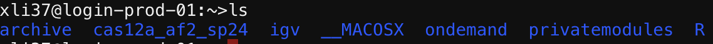

Run AlphaFold2 on Tufts HPC with Command Line Interface (CLI)#
This tutorial will guide the reader through the process of running AlphaFold2 on the Tufts High Performance Computing (HPC) system using the command line interface.
Prerequisites#
Navigate To The Cluster and prepare the input file#
Navigate to: https://ondemand.pax.tufts.edu/
Log in with your Tufts credentials
On the top menu bar choose
Clusters->Tufts HPC Shell AccessType
pwdto check your current directory. You should be at your home directory, which is listed as/cluster/home/your_utln/
Type
lsto list the files in your current directory.Copy the example folder and data to your home directory by following command
cp -r /cluster/tufts/bio/tools/training/cas12a_af2_sp24/ ./
Type
lsto list the files in your current directory after copying the files.

Prepare your input data#
Input data for AlphaFold2 typically includes the amino acid sequences of the proteins you wish to model.
Your input data should be located here: /cluster/home/your_utln/cas12a_af2_sp24/5XUS_mut2cwf_modified.fasta
Remember to replace your_utln with your own tufts credentials.
Executing AlphaFold2#
Run AlphaFold2 using a command that specifies your input files, output directory, and other parameters.
Remember to edit the script before you submit it to the queue
You will need to replace the path to your own path.
To submit your job to gpu node, type the following command
sbatch /cluster/home/your_utln/cas12a_af2_sp24/script/runaf.sh
Check the results#
ranked_0.pdb is your best predicted structure. This file contains the highest-ranked prediction based on the analysis, indicating it is considered the most accurate or reliable structure prediction from the set of models used.
cd /cluster/home/your_utln/cas12a_af2_sp24/out/

[!NOTE] If you encounter any issues or this doesn’t work as expected, please feel free to reach out to Shirley Li, xue.li37@tufts.edu